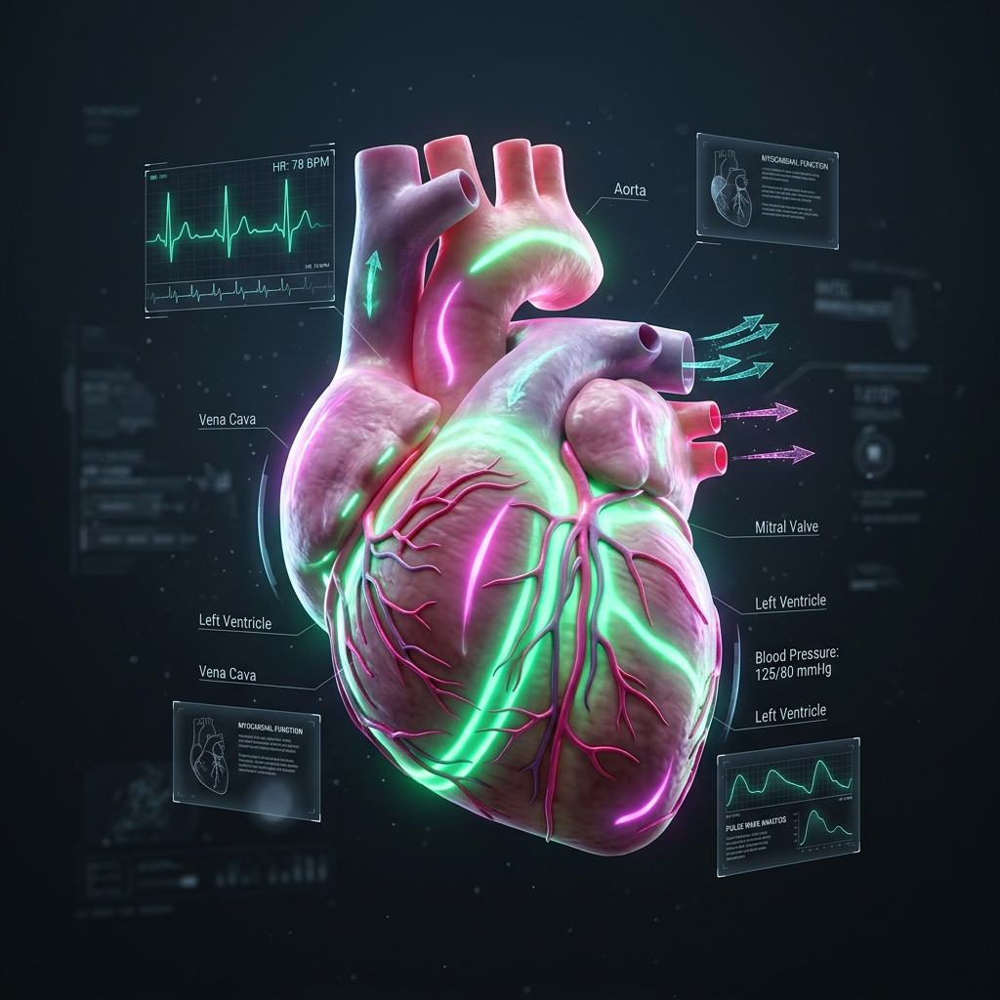

Next-generation rPPG technology detecting vital signs via subtle skin color variations. Clinical precision meets futuristic ease.

Deep learning models achieving sub-1 BPM Mean Absolute Error in real-world clinical environments.
No wearables. No discomfort. Only a standard camera lens needed.
GDPR compliant, end-to-end encrypted biometric processing.